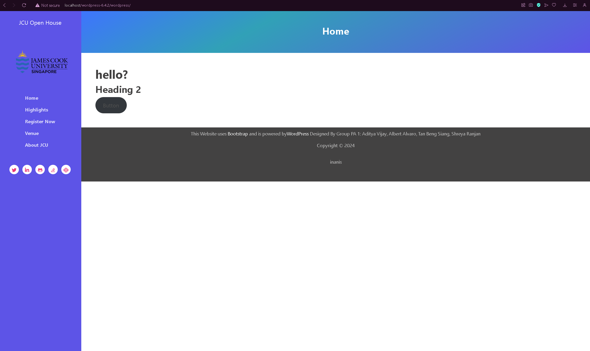
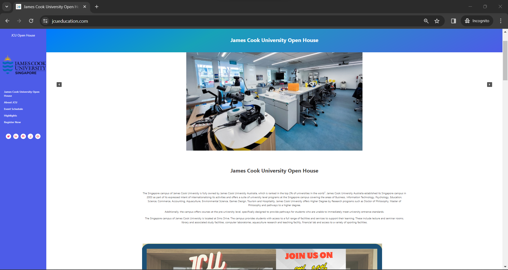

We are tasked to design and create a website for an open house event at the prestigious university James Cook University, which offers multiple degrees and specialization in different fields.
The goal of the website is to:
- Increase acceptance rate 5%
- Increase open house attendance rate 10%
- Custom Design Theme made from scratch that allows for dynamic changes through WordPress
- Multi-version design of the website
Website is available, up-to-date and working in production. Available to view at Production Site
Website's content is complete, accurate and the text and media used are well integrated and optimized. Goals of the website are clearly evident in the design with multiple and appropriate use of calls-to-action
Website's content is well organized and navigation is unique and intuitive
XAMPP served as the local development environment, providing an integrated platform with Apache, MySQL, PHP, and phpMyAdmin for efficient WordPress theme and site development.
Varying Vagrants Vagrant offered a robust development environment with pre-configured settings, enhancing collaboration and testing in a consistent setup.
Local Host Showcase:
Our Team particularly liked this specific interface design due to the way we have fully utilized the custom made theme which allows for dynamic content to be added through WordPress that is the custom media images, the required content and multiple calls to action to reach the website's goals and audience, making it a professional dedicated website.
Interface Design:
Through utilizing plugins such as Yoast SEO, we were able to drastically improve the Search Engine Optimization for the Website which essentially made it suitable for scanning and for site goals, the images used enhance the meaning of the text content.
Theme Development is complete and follows WordPress standards and guidelines; theme is reusable and can be used to dynamically create content on the website, the content is not hard coded.
Version Control is used appropriately with decent commit messages and no duplicate files or folders.
Very good usage of tools and resources that are present in the real-world Industry as well
Documentation is complete, well written, error free and done well in the sense to allow future development and deployment of the site.
Login: user
Password: IrlUZly,d:D5
https://jcueducation.com/wp-admin/ incase the above link may not work, this would redirect you to the login page where upon filling those details, access to the dashboard will be granted.
Website is fully functional and optimized to adhere to project goals. Website is being hosted in Singapore Server so there should be no problems with connecting to it
In the off chance of an AWS conduct maintenance and server will be shut down temporarily. In that case kindly email aditya.vijay@my.jcu.edu.au and I will provide screenshot evidence or you can refer to the GitHub Repositories above which contain screenshot images of the website as well.